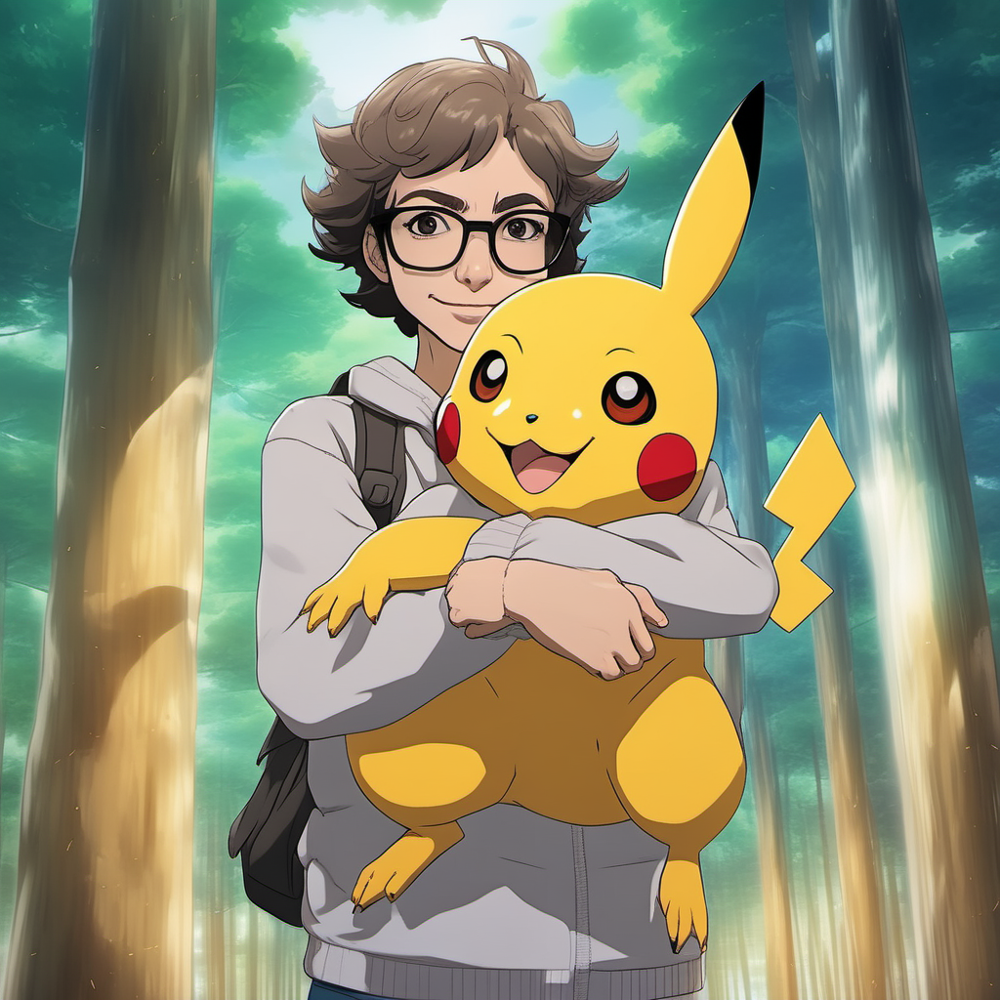

Introduction
- IP Adapter Face for Stable DIffusion XL was recently released
- I thought it would be like dreambooth without training
- Sad that it’s not great for photorealism
- Happy that it’s great for everything else!
- In this article I’ll explain
- a high level explanation of how IP Adapter works
- how you can generate beautiful pics of yourself in different styles
%% Result table %%
How IP Adapter works
%% Pic of uncanny result of IP adapter realist %%
How to use IP Adapter Face to generate yourself in different styles
Requierments
- A picture of yourself
- ComfyUI
- ComfyUI IP Adapter Plus custom node
It should also works with Automatic1111’s Stable Diffusion WebUI with ControlNet extension or other webui
Input picture
- You need a picture that clearly show your head
- The picture need to be a square
- Optional: increasing the sharpness helps having a more defined result [1]
%% ComfyUI workflow input image %%
[1] ref youtube comfuyui author
Important parameters
Two parameters are important
